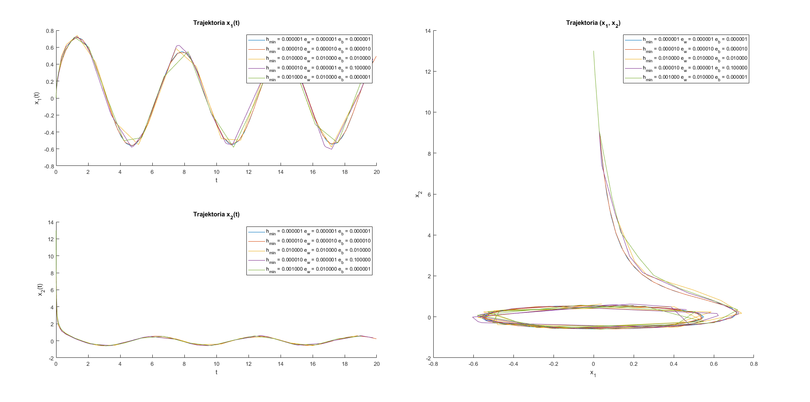

student: Bartłomiej Krawczyk
indeks: 310774
Ruch punktu na płaszczyźnie ($x_1$, $x_2$) jest opisany równaniami:
$$ \frac{dx_1}{dt} = x_2 + x_1 (0.3 - x_1^2 - x_2^2) $$
$$ \frac{dx_1}{dt} = - x_1 + x_2 (0.3 - x_1^2 - x_2^2) $$
Należy obliczyć przebieg trajektorii ruchu tego punktu w przedziale [0, 20] dla warunków początkowych: $x_1(0) = 0$, $x_2(0) = 13$.
Rozwiązanie proszę znaleźć korzystając z zaimplementowanej przez siebie w języku Matlaba w formie funkcji (możliwie uniwersalnej, czyli solwera, o odpowiednich parametrach wejścia i wyjścia) metody Dormand-Prince'a czwartego rzędu przy zmiennym kroku z szacowaniem błędu techniką pary metod włożonych (DorPri45).
function dxdt = trajectory(t, x)
dx1dt = x(2) + x(1) * (0.3 - x(1)^2 - x(2)^2);
dx2dt = -x(1) + x(2) * (0.3 - x(1)^2 - x(2)^2);
dxdt = [dx1dt; dx2dt];
end
Metoda Dormand-Prince'a bierze pod uwagę parę metod włożonych - dwie metody Rungego-Kutty - 4 oraz 5 rzędu.
Metoda RK rzędu 4 (6 etapowa): $$ x_{n+1} = x_n + h \sum_{i=1}^6 w_i^* k_i $$ $$ k_1 = f(t_n, x_n) $$ $$ k_i = f(t_n + c_i h, x_n + h \sum_{j=1}^{i-1} a_{ij}k_j), \text{dla i=2,3,...6} $$
Metoda RK rzędu 5 (7 etapowa): $$ x_{n+1} = x_n + h \sum_{i=1}^{7} w_i^* k_i $$ $$ k_1 = f(t_n, x_n) $$ $$ k_i = f(t_n + c_i h, x_n + h \sum_{j=1}^{i-1} a_{ij}k_j), \text{dla i=2,3,...7} $$
W obu metodach współczynniki $w_i^*$ i $w_i$ są różne, ale równe są współczynniki $c_i$ oraz $a_{ij}$.
$$ C = \begin{bmatrix} 0 & 1/5 & 3/10 & 4/5 & 8/9 & 1 & 1 \\ \end{bmatrix} $$
$$ A = \begin{bmatrix} 0 & 0 & 0 & 0 & 0 & 0 \\ 1/5 & 0 & 0 & 0 & 0 & 0 \\ 3/40 & 9/4 & 0 & 0 & 0 & 0 \\ 44/45 & -56/15 & 32/9 & 0 & 0 & 0 \\ 19372/6561 & -25360/2187 & 64448/6561 & -212/729 & 0 & 0 \\ 9017/3168 & -355/33 & 46732/5247 & 49/176 & -5103/18656 & 0 \\ 35/384 & 0 & 500/1113 & 125/192 & -2187/6784 & 11/84 \\ \end{bmatrix} $$
$$ W^* = \begin{bmatrix} 35/384 & 0 & 500/1113 & 125/192 & -2187/6784 & 11/84 \\ \end{bmatrix} $$
$$ W = \begin{bmatrix} 5179/57600 & 0 & 7571/16695 & 393/640 & -92097/339200 & 187/2100 & 1/40 \\ \end{bmatrix} $$
Dzięki temu współczynniki $k_i$ w obu przypadkach są wyliczane ze wzorów:
$$ k_{1} = h f(t_{n}, x_{n}) $$
$$ k_{2} = h f(t_{n}+\frac{1}{5} h, x_{n}+\frac{1}{5} k_{1}) $$
$$ k_{3} = h f(t_{n}+\frac{3}{10} h, x_{n}+\frac{3}{40} k_{1}+\frac{9}{40} k_{2}) $$
$$ k_{4} = h f(t_{n}+\frac{4}{5} h, x_{n}+\frac{44}{45} k_{1}-\frac{56}{15} k_{2}+\frac{32}{9} k_{3}) $$
$$ k_{5} = h f(t_{n}+\frac{8}{9} h, x_{n}+\frac{19372}{6561} k_{1}-\frac{25360}{2187} k_{2}+\frac{64448}{6561} k_{3}-\frac{212}{729} k_{4}) $$
$$ k_{6} = h f(t_{n}+h, x_{n}+\frac{9017}{3168} k_{1}-\frac{355}{33} k_{2}-\frac{46732}{5247} k_{3}+\frac{49}{176} k_{4}-\frac{5103}{18656} k_{5}) $$
$$ k_{7} = h f(t_{n}+h, x_{n}+\frac{35}{384} k_{1}+\frac{500}{1113} k_{3}+\frac{125}{192} k_{4}-\frac{2187}{6784} k_{5}+\frac{11}{84} k_{6}) $$
Wartość w kolejnym kroku metody RK rzędu 4 jest wyliczana jako:
$$ x_{n+1}=x_{n}+\frac{35}{384} k_{1}+\frac{500}{1113} k_{3}+\frac{125}{192} k_{4}-\frac{2187}{6784} k_{5}+\frac{11}{84} k_{6} $$
Następnie wyliczamy wartość w kolejnym punkcie z wykorzystaniem metody RK rzędu 5:
$$ z_{n+1}=x_{n}+\frac{5179}{57600} k_{1}+\frac{7571}{16695} k_{3}+\frac{393}{640} k_{4}-\frac{92097}{339200} k_{5}+\frac{187}{2100} k_{6}+\frac{1}{40} k_{7} $$
Po odjęciu stronami powyższych równań otrzymujemy oszacowanie błędu metody rzędu 4:
$$ \delta_n(h)=h(z_{n+1}-x_{n+1})=h(-\frac{71}{57600} k_{1}(h)+\frac{71}{16695} k_{3}(h)-\frac{71}{1920} k_{4}(h)+\frac{17253}{339200} k_{5}(h)-\frac{22}{525} k_{6}(h)+\frac{1}{40} k_{7}(h)) $$
Program:
function [x2, delta] = nextValue(f, t, x1, h)
k1 = h * f(t, x1);
k2 = h * f(t + 1/5 * h, x1 + 1/5 * k1);
k3 = h * f(t + 3/10 * h, x1 + 3/40 * k1 + 9/40 * k2);
k4 = h * f(t + 4/5 * h, x1 + 44/45 * k1 - 56/15 * k2 + 32/9 * k3);
k5 = h * f(t + 8/9 * h, x1 + 19372/6561 * k1 - 25360/2187 * k2 + 64448/6561 * k3 - 212/729 * k4);
k6 = h * f(t + h, x1 + 9017/3168 * k1 - 355/33 * k2 + 46732/5247 * k3 + 49/176 * k4 - 5103/18656 * k5);
k7 = h * f(t + h, x1 + 35/384 * k1 + 500/1113 * k3 + 125/192 * k4 - 2187/6784 * k5 + 11/84 * k6);
x2 = x1 + 35/384 * k1 + 500/1113 * k3 + 125/192 * k4 - 2187/6784 * k5 + 11/84 * k6;
delta = h * (-71/57600 * k1 + 71/16695 * k3 - 71/1920 * k4 + 17253/339200 * k5 - 22/525 * k6 + 1/40 * k7);
end
W trakcie wyznaczania kolejnego kroku $h_{n+1}$ bierze się pod uwagę niedokładności oszacowania błędu, a także stosuje się współczynnik bezpieczeństwa $s$:
$$ h_{n+1} = s \alpha h_n, \text{ gdzie s < 1} $$
dla metody Dormand-Prince'a przyjmę $s \approx 0.9$, a współczynnik modyfikacji kroku $\alpha$ wylicza się ze wzoru:
$$ \alpha = min_{1\le i\le k}(\frac{\varepsilon_i}{|\delta_n(h)_i|})^{\frac{1}{5}}, i = 1, 2, ..., k $$
gdzie:
$$ \varepsilon_i = |(x_i)_n| \varepsilon_w + \varepsilon_b \\ \varepsilon_w \text{ - dokładność względna} \\ \varepsilon_b \text{ - dokładność bezwzględna} $$
Program:
function alpha = calculateAlpha(x, epsilonW, epsilonB, delta)
epsilon = abs(x) * epsilonW + epsilonB;
alpha = min((epsilon ./ abs(delta)) .^ (1/5));
end
Program
function [tout, xout, hout, dout] = dorpri45(dxdt, tspan, x0, h0, hmin, epsilonW, epsilonB)
%
% CEL
% Wyznaczanie rozwiązania układu równań różniczkowych zwyczajnych
% przy podanej wartości rozwiązania w punkcie początkowym
%
% PARAMETRY WEJSCIOWE
% dxdt - funkcja przyjmująca jako parametry czas oraz wartości
% w punkcie, a zwracająca pochodną dx/dt
% t0 - wektor dwu wartościowy - przedział poszukiwania
% rozwiązania
% x0 - wektor punktów startowych
% h0 - początkowa wartość kroku
% hmin - ustalona minimalna wielkość kroku - poniżej tego
% kroku kończymy program - uznajemy, że nie da się
% znaleźć wyniku z zadaną dokładnością
% epsilonW - wartość dozwolonego błędu względnego
% epsilonB - wartość dozwolonego błędu bezwzględnego
%
% PARAMETRY WYJSCIOWE
% tout - wektor kolejnych wartości czasu t
% xout - macierz kolejnych wartości x w kolejnych iteracjach
% algorytmu
% hout - wektor kroków w kolejnych iteracjach algorytmu
% dout - macierz szacowanych błędów dla wartości x w kolejnych
% iteracjach algorytmu
%
% PRZYKLADOWE WYWOLANIE
% >> [tout, xout, hout, dout] = dorpri45(@trajectory, [0 20], [0; 13], 1e-4, 1e-6, 1e-8, 1e-8)
%
s = 0.9;
x1 = x0;
t1 = tspan(1);
tmax = tspan(2);
h1 = h0;
tout = t1;
xout = x1';
hout = h1;
dout = zeros(length(x0));
n = 1;
while true
[x2, delta] = nextValue(dxdt, t1, x1, h1);
alpha = calculateAlpha(x1, epsilonW, epsilonB, delta);
salpha = s * alpha;
h2prop = salpha * h1;
if salpha >= 1
if t1 + h1 >= tmax
% osiągnięty koniec przedziału -> kończymy program
return;
else
% aktualizacja wartości funkcji w kolejnych krokach
t2 = t1 + h1;
% stosuję heurystyczne ograniczenie maksymalnego wzrostu
% długości kroku h_n w jednej iteracji do wartości co
% najwyżej \beta h_n
h2 = min([h2prop, 5 * h1, tmax - t1]);
n = n + 1;
tout(n, 1) = t2;
xout(n, :) = x2';
hout(n, 1) = h2;
dout(n, :) = delta';
t1 = t2;
x1 = x2;
h1 = h2;
end
else
% w tej iteracji krok był za duży, należy zminiejszyć krok
if h2prop < hmin
% osiągnięty krok jest mniejszy niż zadany najmniejszy krok
disp("Niemożliwe rozwiązanie z zadaną dokładnością");
return;
else
% zmniejszenie kroku
h1 = h2prop;
end
end
end
end
Wykres
Ilość iteracji
| function | iterations |
|---|---|
| ode45 | 169 |
| dorpri45 | 160 |
Porównanie czasu
ode45:
Elapsed time is 0.002367 seconds.
dorpri45:
Elapsed time is 0.006475 seconds.
Komentarz:
Program:
function plot_3_1()
x0_1 = 0;
x0_2 = 13;
x0 = [x0_1; x0_2];
time_span = [0 20];
h0 = 1e-4;
hmin = 1e-6;
epsilonW = 1e-8;
epsilonB = 1e-8;
disp("ode45:");
tic;
[tode, xode] = ode45(@trajectory, time_span, x0);
toc
disp("dorpri45:");
tic;
[tdp, xdp, ~, ~] = dorpri45(@trajectory, time_span, x0, h0, hmin, epsilonW, epsilonB);
toc
fprintf('function\t|\titerations\n');
fprintf('-\t\t\t|\t-\n');
todesize = size(tode);
tdpsize = size(tdp);
fprintf('ode45\t\t|\t%0.f\n', [todesize(1)]);
fprintf('dorpri45\t|\t%0.f\n', [tdpsize(1)]);
tiledlayout(2, 2);
% Trajektoria x_1(t)
nexttile;
hold on;
title('Trajektoria x_1(t)');
xlabel('t');
ylabel('x_1(t)');
plot(tode, xode(:, 1));
plot(tdp, xdp(:, 1));
legend('ode45', 'dorpri45');
hold off;
% Trajektoria na płaszczyźnie (x_1, x_2)
nexttile([2, 1]);
hold on;
title('Trajektoria (x_1, x_2)');
xlabel('x_1');
ylabel('x_2');
plot(xode(:, 1), xode(:, 2));
plot(xdp(:, 1), xdp(:, 2));
legend('ode45', 'dorpri45');
hold off;
% Trajektoria x_2(t)
nexttile;
hold on;
title('Trajektoria x_2(t)');
xlabel('t');
ylabel('x_2(t)');
plot(tode, xode(:, 2));
plot(tdp, xdp(:, 2));
legend('ode45', 'dorpri45');
hold off;
end

Ilość iteracji
| h_{min} | e_w | e_b | iterations |
|---|---|---|---|
| 0.000001 | 0.000001 | 0.000001 | 78 |
| 0.000010 | 0.000010 | 0.000010 | 56 |
| 0.010000 | 0.010000 | 0.010000 | 24 |
| 0.000010 | 0.000001 | 0.100000 | 45 |
| 0.001000 | 0.010000 | 0.000001 | 25 |
Komentarz:
Minimalny krok $h_{min}$:
Dokładność względna:
Dokładność bezwzględna:
Program:
function plot_3_3()
x0_1 = 0;
x0_2 = 13;
x0 = [x0_1; x0_2];
time_span = [0 20];
parameters = [
1e-6 1e-6 1e-6
1e-5 1e-5 1e-5
1e-2 1e-2 1e-2
1e-5 1e-6 1e-1
1e-3 1e-2 1e-6
];
[n, ~] = size(parameters);
ts = {};
xs = {};
hs = {};
ds = {};
legends = {};
fprintf('h_{min}\t\t|\te_w\t\t\t|\te_b\t\t\t|\titerations\n');
fprintf('-\t\t\t|\t-\t\t\t|\t-\t\t\t|\t-\n');
for i = 1 : n
[tdp, xdp, hdp, ddp] = dorpri45(@trajectory, time_span, x0, 1e-4, parameters(i, 1), parameters(i, 2), parameters(i, 3));
ts{i} = tdp;
xs{i} = xdp;
hs{i} = hdp;
ds{i} = ddp;
legends{i} = sprintf('h_{min} = %f e_w = %f e_b = %f', [parameters(i, 1), parameters(i, 2), parameters(i, 3)]);
tsize = size(tdp);
fprintf('%f\t|\t%f\t|\t%f\t|\t%0.f\n', [parameters(i, 1), parameters(i, 2), parameters(i, 3), tsize(1)]);
end
tiledlayout(2, 2);
% Trajektoria x_1(t)
nexttile;
hold on;
title('Trajektoria x_1(t)');
xlabel('t');
ylabel('x_1(t)');
for i = 1 : n
plot(ts{i}, xs{i}(:, 1));
end
legend(legends);
hold off;
% Trajektoria na płaszczyźnie (x_1, x_2)
nexttile([2, 1]);
hold on;
title('Trajektoria (x_1, x_2)');
xlabel('x_1');
ylabel('x_2');
for i = 1 : n
plot(xs{i}(:, 1), xs{i}(:, 2));
end
legend(legends);
hold off;
% Trajektoria x_2(t)
nexttile;
hold on;
title('Trajektoria x_2(t)');
xlabel('t');
ylabel('x_2(t)');
for i = 1 : n
plot(ts{i}, xs{i}(:, 2));
end
legend(legends);
hold off;
end

Komentarz:
Program:
function plot_3_2()
x0_1 = 0;
x0_2 = 13;
x0 = [x0_1; x0_2];
time_span = [0 20];
h0 = 1e-4;
hmin = 1e-6;
epsilonW = 1e-8;
epsilonB = 1e-8;
[tdp, ~, hdp, ddp] = dorpri45(@trajectory, time_span, x0, h0, hmin, epsilonW, epsilonB);
tiledlayout(2, 1);
% Zależność długości kroku od czasu
nexttile;
hold on;
title('Zależność długości kroku od czasu');
xlabel('t');
ylabel('h(t)');
plot(tdp, hdp);
hold off;
% Zależność estymaty błędu od czasu
nexttile;
hold on;
title('Zależność estymaty błędu od czasu');
xlabel('t');
ylabel('delta_n(t)');
plot(tdp, ddp(:, 1));
plot(tdp, ddp(:, 2));
hold off;
end
Ocena poprawności wyników
Wyniki obu metod zwracają zbliżone rezultaty. Na pierwszym wykresie przebiegi praktycznie się pokrywają.
Ocena efektywności algorytmów
Obie metody znalazły rozwiązanie w stosunkowo niewielkiej ilości kroków.
Która metoda lepsza?
Obie metody poradziły sobie bardzo dobrze z obliczaniem przebiegu trajektorii.
Która metoda szybsza?
Obie metody korzystając z implementacji metody Dormand-Prince'a. Metoda matlaba jest zoptymalizowana pod ten język przez co czas wykonania jest nieco krótszy.
Ilość iteracji mojej implementacji jest bardzo zależna od parametrów wejściowych. Dla przyjętych parametrów moja
implementacja za każdym razem korzystała z mniejszej ilości iteracji niż metoda matlaba ode45.